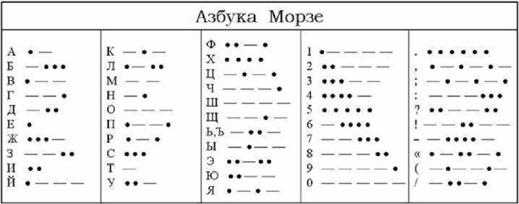

Шифры
Криптография — это искусство и наука сокрытия (через шифрование) чувствительной информации. Она включает в себя шифрование (когда шифр первоначально применяется к необработанному «открытому/исходному тексту» и дешифрование, когда шифр используется для возвращения сообщению читабельной формы).[1]
Первым шифром, зародившимся в древних цивилизациях и актуальным, в некотором роде, и по сей день, можно считать шифр замены. Чуть позже был придуман шифр сдвига, который применялся Юлием Цезарем, почему и был назван в его честь.[2]
Шифр сдвига[3]
Это один из самых первых типов шифра. Процесс шифрования очень прост. Он заключается в замене каждой буквмы исходного сообщения на другую, отстоящую от исходной на заданное количество позиций в алфавите. Это количество позиций называется ключом. При ключе, равном трем, этот метод называется шифром Цезаря. Император использовал его для секретной переписки. Для того чтобы зашифровать сообщение, нужно построить таблицу подстановок:
| a | b | c | d | e | f | g | h | i | j | k | l | m | n | o | p | q | r | s | t | u | v | w | x | y | z |
| d | e | f | g | h | i | j | k | l | m | n | o | p | q | r | s | t | u | v | w | x | y | z | a | b | c |
Пример шифра
Исходный текст: Hi, Brut! How are you?
Шифрованный текст: Kl, Euxw! Krz duh brx?
Шифр замены[3]
Это один из самых первых типов шифра. Процесс шифрования очень прост. Он заключается в замене каждой буквмы исходного сообщения на другую, отстоящую от исходной на заданное количество позиций в алфавите. Это количество позиций называется ключом. При ключе, равном трем, этот метод называется шифром Цезаря. Император использовал его для секретной переписки. Для того чтобы зашифровать сообщение, нужно построить таблицу подстановок:
| a | b | c | d | e | f | g | h | i | j | k | l | m | n | o | p | q | r | s | t | u | v | w | x | y | z |
| b | e | x | g | w | i | q | v | l | o | u | m | p | j | r | s | t | n | k | h | f | y | z | a | d | c |
Пример шифра
Действуем аналогично предыдущему шифру. Для каждого символа исходного текста берем соответствующий ему из таблицы подстановки:
Исходный текст: Hi, Brut! How are you?
Шифрованный текст: Vl, Enfh!Vrz bnw drf?
Транспозиция[4]
В транспозирующих шифрах буквы переставляются по заранее определенному правилу. Например, если каждое слово пишется задом наперед, то из «all the better to see you with» получается «lla eht retteb ot ees joy htiw». Другой пример — менять местами каждые две буквы. Таким образом, предыдущее сообщение станет «la tl eh eb tt re ot es ye uo iw ht». Подобные шифры использовались в Первую Мировую и Американскую Гражданскую Войну, чтобы посылать важные сообщения. Сложные ключи могут сделать такой шифр довольно сложным на первый взгляд, но многие сообщения, закодированные подобным образом, могут быть расшифрованы простым перебором ключей на компьютере. Попробуйте расшифровать «THGINYMROTSDNAKRADASAWTI».
Азбука Морзе[4]
В азбуке Морзе каждая буква алфавита, все цифры и наиболее важные знаки препинания имеют свой код, состоящий из череды коротких и длинных сигналов, часто называемых «точками и тире». Так, A — это «•–», B — «–•••», и т.д. В отличие от большинства шифров, азбука Морзе используется не для затруднения чтения сообщений, а наоборот, для облегчения их передачи (с помощью телеграфа). Длинные и короткие сигналы посылаются с помощью включения и выключения электрического тока. Телеграф и азбука Морзе навсегда изменили мир, сделав возможной молниеносную передачу информации между разными странами, а также сильно повлияли на стратегию ведения войны, ведь теперь можно было можно осуществлять почти мгновенную коммуникацию между войсками.
Моноалфавитная замена[4]
ROT1, азбука Морзе, шифр(ы) Цезаря относятся к одному и тому же типу шифров — моноалфавитной замене. Это значит, что каждая буква заменяется на одну и только одну другую букву или символ. Такие шифры очень легко расшифровать даже без знания ключа. Делается это при помощи частотного анализа. Например, наиболее часто встречающаяся буква в английском алфавите — «E». Таким образом, в тексте, зашифрованном моноалфавитным шрифтом, наиболее часто встречающейся буквой будет буква, соответствующая «E». Вторая наиболее часто встречающаяся буква — это «T», а третья — «А». Человек, расшифровывающий моноалфавитный шифр, может смотреть на частоту встречающихся букв и почти законченные слова. Так, «T_E» с большой долей вероятности окажется «ТНЕ». К сожалению, этот принцип работает только для длинных сообщений. Короткие просто не содержат в себе достаточно слов, чтобы с достаточной достоверностью выявить соответствие наиболее часто встречающихся символов буквам из обычного алфавита. Мария Стюарт использовала невероятно сложный моноалфавитный шифр с несколькими вариациями, но когда его наконец-то взломали, прочитанные сообщения дали ее врагам достаточно поводов, чтобы приговорить ее к смерти. Ptbndcb ymdptmq bnw yew, bnwzw raw rkbcriie wrze bd owktxnwa.